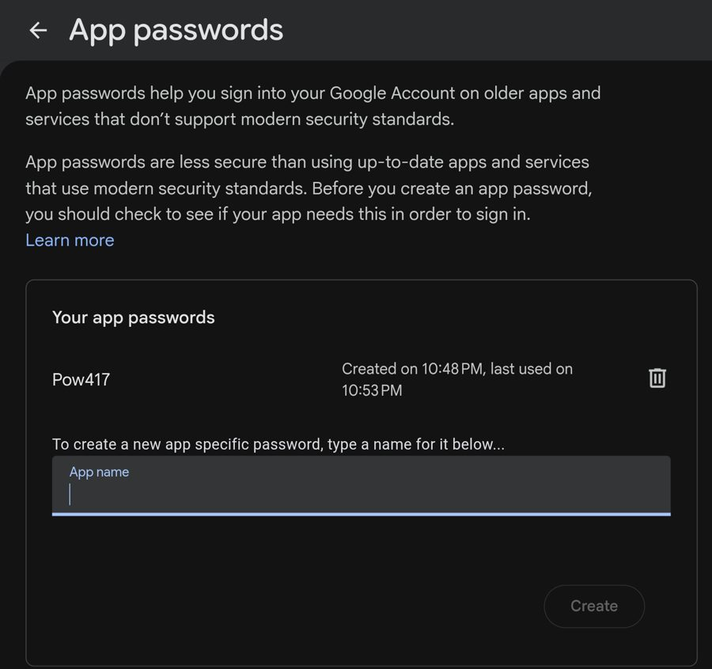
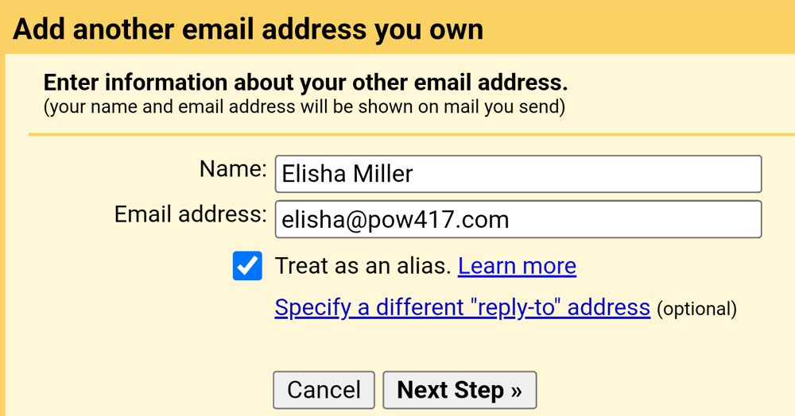
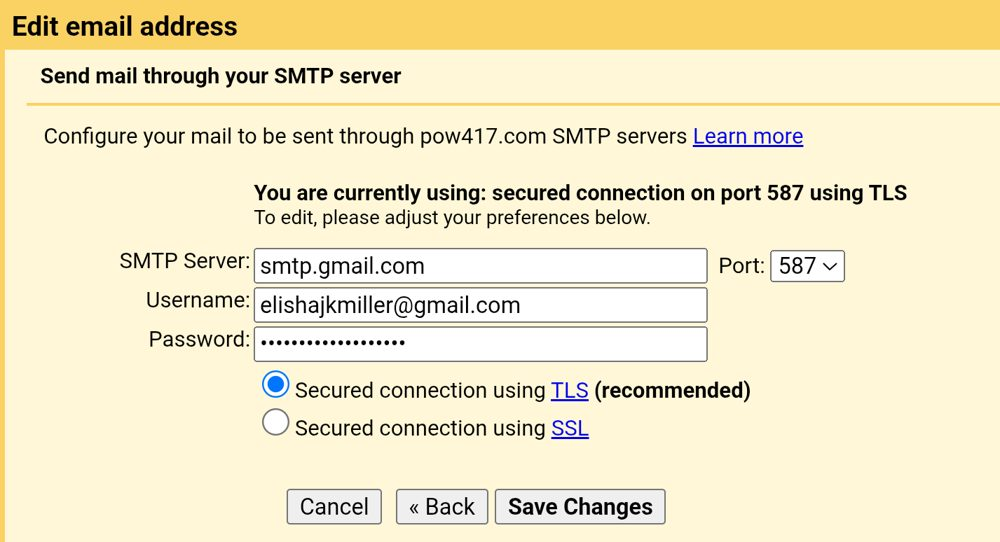
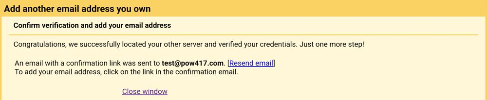
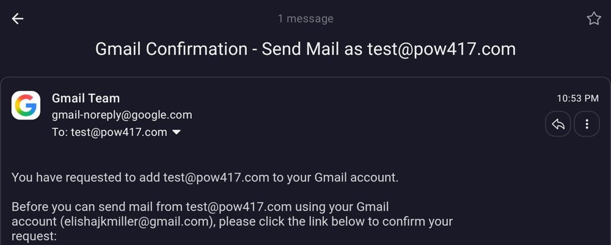
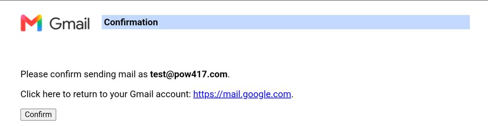
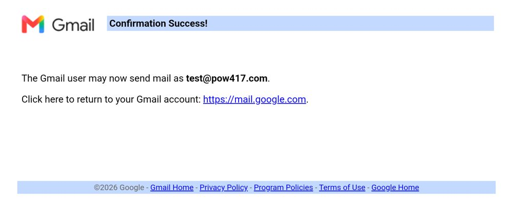
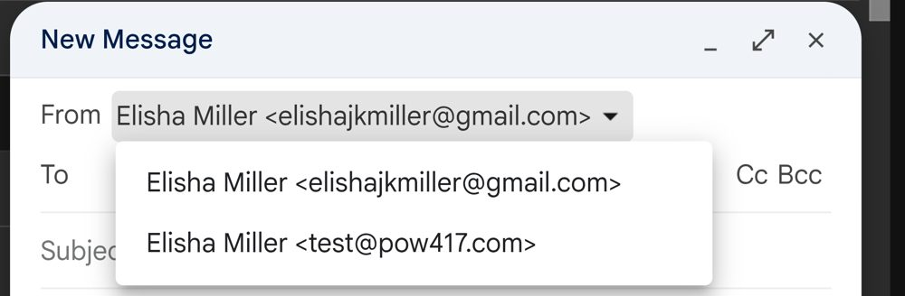

POW417 addresses
| Address | Goes to |
|---|---|
| kaleb@pow417.com | Kaleb |
| ksiah@pow417.com | Ksiah |
| evalee@pow417.com | Evalee |
| jacob@pow417.com | Jacob |
| hello@pow417.com | Kaleb, Ksiah, Evalee, Jacob |
Mail sent to your pow417.com address already lands in your own Gmail. These steps let you send from it too. It takes about five minutes.
Use a computer, or a phone browser switched to "desktop site". The Gmail phone app can't do this.
1. Turn on 2-Step Verification
Go to myaccount.google.com/signinoptions/twosv and turn it on if it isn't already.
2. Make an app password
Go to myaccount.google.com/apppasswords. It isn't in Google's menus, so use this link.
Type "pow417" in the App name box and click Create. Copy the 16-letter password it shows and keep that tab open.

3. Open Gmail's "Send mail as" setting
Go to Gmail settings, Accounts and Import. If it opens the wrong Google account, change the 0 in the address to 1 or 2.
Next to "Send mail as:" click "Add another email address".
4. Your name and address
Name: your name, the way people should see it
Email address: yourname@pow417.com
Leave "Treat as an alias" checked.

Click Next Step.
5. The server box
Gmail fills in the wrong server here. Change all of it:
SMTP Server: smtp.gmail.com
Port: 587
Username: your full Gmail address (like someone@gmail.com), not your pow417 address
Password: the app password from step 2 (spaces are fine)
Keep "Secured connection using TLS" selected.

Click Add Account. If it worked, you'll see this:

6. Confirm it
Gmail sends a confirmation email to your pow417 address. It shows up in your own Gmail. Open it and click the first link.

Click Confirm.

You should see Confirmation Success.

7. Reply from the right address
Back on the same settings page, under "When replying to a message", pick "Reply from the same address the message was sent to".
8. Send from it
When you write an email, click the From line and pick your pow417 address.

Also on hello@pow417.com?
Do steps 3 to 6 again with hello@pow417.com, using the same app password. Everyone on hello@ gets the confirmation email, and any of you can click it.
If something goes wrong
"Couldn't connect to the server": the server isn't smtp.gmail.com or the port is wrong. Use port 587.
"Authentication error": the username has to be your full Gmail address, and the password has to be the app password, not your normal one.
The app passwords page says it isn't available: turn on 2-Step Verification first. If you only use a passkey, also add an authenticator app or phone number.
Anything else?
Text me at (417) 317-3051.